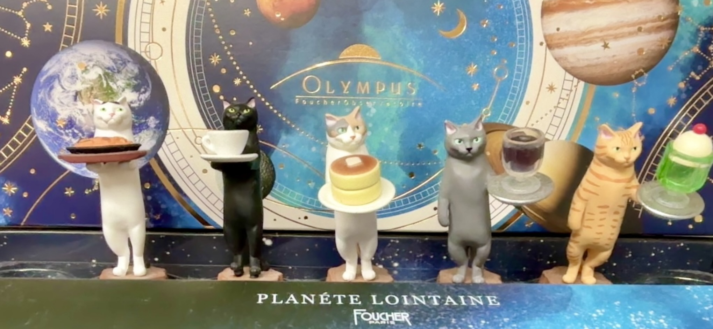

Serina Kanie
Academic Career
| Date | ||
|
2021.04 - 2025.03 |
明治大学総合数理学部 先端メディアサイエンス学科 |
[Web page] |
|
2025.04 - |
明治大学大学院先端数理科学研究科 先端メディアサイエンス専攻 |
[Web page] |
Labolatory
| Date | ||
|
2022.04 - |
明治大学 森勢研究室 |
[Web page] |
Publication
2024年度
- 蟹江世莉奈，俣野文義，小口純矢，森勢将雅，「プロ声優が発話した様々な発話スタイルの統計解析」，日本音響学会2024年秋季研究発表会，pp.1103-1104，Osaka，Sept.4-6，2024．(発表日5日)
2023年度
- 蟹江世莉奈，小口純矢，堀部貴紀，森勢将雅，「エレキベースを対象とした楽器音のリリースエンベロープが自然性に与える影響」，日本音響学会2023年秋季研究発表会，pp.885-886，Aichi，Sept.26-28， 2023．(発表日26日)